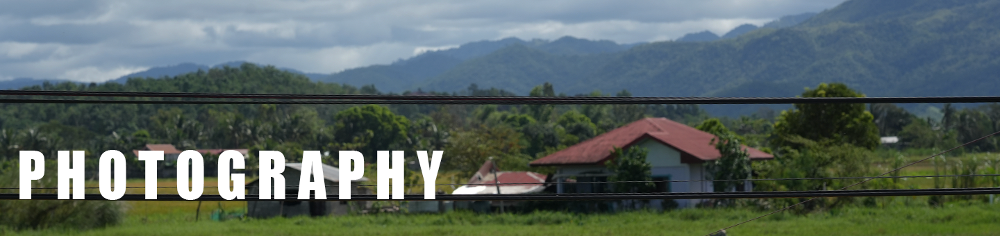

PHOTOGRAPHY
FILM
ART
Movement in still pictures
How can still images create a sense of movement and narrative?
Movement
Movement in still pictures
How can still images create a sense of movement and narrative?